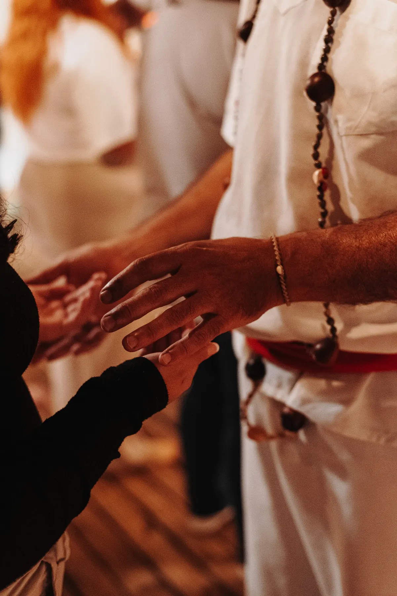

Transmissão Fluídica Silenciosa
Passe Energético
Realizado pelos Médiuns de Passe no centro do terreiro para reequilíbrio vibratório imediato, sem necessidade de conversa verbal.
Como funciona
- Quem realiza
- Médiuns de Passe (ou de Meio) incorporados por suas entidades, atuando em silêncio.
- Como funciona
- Transmissão direta de energia vital através de movimentos serenos que limpam e recompõem seu campo vibratório.
- Sua postura
- Apenas feche os olhos, descruze braços e pernas, respire fundo e mantenha o pensamento receptivo.